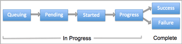
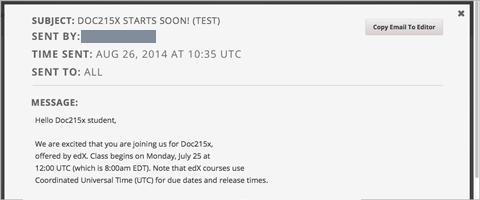

10.6. Bulk Email¶
For courses on edx.org, you can send bulk email messages to course participants directly from the Instructor Dashboard. Messages can use HTML styling, and can include links to videos, social media pages for the course, and other material. All course contributors who are assigned the course staff or instructor role can use bulk emails to communicate with course participants before, during, and after the course run.
This chapter contains the following topics.
- Message Addressing
- Send Email Messages to Course Participants
- Use Keywords in Messages
- Message Workflow States
- Review Sent Messages
- Email Task History Report
- Example Messages to Students
10.6.1. Message Addressing¶
When you send an email message from the Instructor Dashboard, you choose its recipients by selecting one of these predefined groups:
Myself, to test out a message before sending it to a larger group.
Staff and Instructors, to contact other members of the administrative team.
All (students, staff and instructors), to communicate with currently enrolled students and the administrative team.
Email messages are sent to all enrolled students with these exceptions:
- Students who have not replied to the account activation email message that is sent when they registered on edx.org.
- Students who have opted out of receiving email messages through the Email Settings link, which is present for each course on the Current Courses dashboard.
Before you use the bulk email feature, consider that messages cannot be canceled after they are sent. If you plan to send a message to all course participants, be sure to review each draft carefully, and send the message to yourself first for thorough testing.
10.6.2. Send Email Messages to Course Participants¶
To send an email message to course participants:
- View the live version of your course.
- Click Instructor then click Email.
- Select who you want to send the message to from the Send to drop-down list. You can select:
- Myself
- Staff and Instructors
- All (students, staff and instructors)
Enter a Subject for the message. A subject is required.
Enter the text for the message. Message text is required.
To include an image in your message, use the Files & Uploads page in Studio to add the file to your course, then click the Insert/edit image icon. For more information, see 给课程添加文件.
Messages can use HTML styling, including text formatting and links. The email message editor offers the same formatting options as the HTML component editor in Studio. For more information, see 如何使用HTML组件.
You can use keywords in messages, to have values that are specific to each recipient substituted in the content when messages are sent. For more information, see Use Keywords in Messages .
Click Send Email. You can perform other tasks on the Instructor Dashboard or navigate to other pages while you wait for your message to be sent.
After you send a message, a bulk email task is queued for processing. Multiple courses use the same queue to complete these tasks, so it can take some time for your message to be sent to all of its recipients. If your course is a MOOC, consider limiting the number of messages that you send to all course participants to no more than one per week.
10.6.3. Use Keywords in Messages¶
You can include keywords in your messages. A keyword is a variable: when you
send the message, a value that is specific to the each recipient is substituted
for the keyword. For example, when you use the %%USER_FULLNAME%% keyword,
each message contains the name of the recipient.
Note
Do not use keywords in the Subject line of a message. The keyword in the subject will not be assigned a value, and the recipient will see the keyword text.
10.6.3.1. Supported Keywords¶
You can use the following keywords in your messages.
%%USER_ID%%- the anonymous user ID of the message recipient%%USER_FULLNAME%%- the full name of the message recipient%%COURSE_DISPLAY_NAME%%- the display name of the course%%COURSE_END_DATE%%- the end date of the course
10.6.3.2. Keyword Formatting¶
You format keywords as: %%Keyword%%. You can include keywords in any HTML
tags in an email message. For example:
<h2>%%COURSE_DISPLAY_NAME%% Updates</h2>
<p>Dear %%USER_FULLNAME%%, this is a reminder that the last day of the course
is <b>%%COURSE_END_DATE%%</b></p>
. . .
10.6.4. Message Workflow States¶
When you click Send Email for a message, the server begins to process a bulk email task. The server assigns a series of different workflow states to the task.
The workflow states for a bulk email task are:
- Queuing: The bulk email task is created and being queued for background processing.
- Pending: The task is queued and is waiting to run.
- Started: Background processing is in progress to create emailing subtasks.
- Progress: The emailing subtasks are in progress.
- Success: All emailing subtasks are complete. Note that the bulk email task can be in this state even if some or all of its emailing subtasks failed.
- Failure: An error occurred and task processing did not complete successfully.
While the bulk email task is in progress, you can find out how far it has gotten in the workflow by checking the Pending Instructor Tasks section on the Email page.

When the bulk email task is complete, you can find its final state by checking the Email Task History report. See Email Task History Report.
10.6.5. Review Sent Messages¶
You can review a list of all of the messages that have been sent for the course. For any listed message, you can review the subject, the username of the person who sent it, the date and time sent, its selected recipients, and the message text.
View the live version of your course.
Click Instructor then click Email.
In the Email Task History section of the page, click Sent Email History. The list of sent messages displays.
To review additional information for a message, click its subject. The message opens in a dialog box.
Optionally, use the message as the basis for a new message: click Copy Email to Editor. The dialog box closes and you can edit the text, links, and formatting that were duplicated into the Subject and Message fields.
When you create a message by copying a previously-sent message, be sure to review and test it thoroughly before you send it to all course participants.
10.6.6. Email Task History Report¶
The Email Task History report can help you keep track of who sent messages, when, and to how many people. For each message sent, the report includes the username of the requester, the date and time it was submitted, the duration and state of the entire task, the task status, and the task progress.
You can use this history to investigate questions relating to bulk email messages that have been sent, such as:
- How frequently students are sent course-related email messages.
- Whether a message was sent successfully.
- The change in the number of people who were sent course-related messages over time.
To produce the Email Task History report:
- View the live version of your course.
- Click Instructor then click Email.
- In the Email Task History section of the page, click Show Email Task History. A report like the following example displays on the Instructor Dashboard.

10.6.6.1. Review Email Task History¶
For tasks with a State of Success, the Task Progress column shows an informational message. These messages can have a format such as “Message successfully emailed for 13457 recipients (skipping 29) (out of 13486)”. To interpret this message, note that:
The first number (“recipients”) indicates the number of messages sent to the selected recipients.
The second number (“skipping”) indicates the number of enrolled and activated users who were not sent the message. This count is of students who have opted not to receive course email messages.
The final number (“out of”) indicates the number of users in the set of recipients you selected who were enrolled in the course (and had activated their user accounts) when you sent the email message.
Note that the Total number of enrollees shown on the Course Info page includes all currently enrolled students, regardless of account activation status, and as a result can be different than this number.
If the “recipients” and “out of” numbers are the same, the message reads “Message successfully emailed for 13457 recipients” instead.
Other Task Progress messages for tasks with a State of Success indicate that some or all of the emailing subtasks did not successfully send email:
- “Message emailed for {number succeeded} of {number attempted} recipients”
- “Message failed to be emailed for any of {number attempted} recipients”
- “Unable to find any recipients to be emailed”
No Task Progress messages display for tasks that have a State of Failure.
10.6.7. Example Messages to Students¶
You can use these example messages, prepared for delivery before typical course milestones, as models for your own course communications.
- Prelaunch Reminder
- Launch Day Welcome
- Verified Registration Reminder
- Weekly Highlights
- Midcourse Encouragement
- Midcourse Events
- Technical Issue
- Course Farewell and Certificates
- New Course Run Announcement
These messages are styled as email messages, but you could also post this information in a course discussion topic or on the Course Info page. To use keywords, you must send email messages; keywords are not supported in discussion topics or the Course Info page.
Important
Revise these message templates carefully to include facts for your own course, meet the needs of your students, and reflect your own objectives and personality. Search for the “{” and “}” characters to locate prompts and replace them with course-specific values.
Some of these messages also contain keywords. Values specific to your course and the recipients will be substituted for the keywords when you send the messages. Ensure you are using keywords appropriately for your course and objectives.
10.6.7.1. Pre-launch Reminder¶
Pre-launch reminders raise awareness of the course start date, publicize the course, and generate excitement. In addition to the course start date and time, the example that follows also lets students know that:
- UTC is used in edX courses. Alternatively, you could include information about your course or the edX platform that will contribute to your students’ success.
- The course has a companion social media site. Alternatively, you might include information about planned meetups or other community-building opportunities.
You may want to send out more than one message before the course launches: use this template as a starting point for crafting the different messages you want to deliver. Replace values enclosed by {braces} with information that applies to your course. In addition, check that you are using keywords appropriately.
Subject: {course number} Starts Soon!
Hello %%USER_FULLNAME%%,
We are excited that you are joining us for {course number}
%%COURSE_DISPLAY_NAME%%, offered by {organization name} through edX. Class
begins on {day}, {date} at {time} UTC (which is {time} {local time zone}).
Note that edX courses use Coordinated Universal Time (UTC) for due dates and
release times.
In case you haven't already found it, {course number} has its own official
Facebook page {add link}. You can find videos and photos posted there before
the course even begins.
If this is your first edX course, consider enrolling in the edX Demo course
{add link}. This course gives you an opportunity to explore the edX platform
and learn how to answer problems and track your progress, before {course
number} begins.
Your {course number} course staff
10.6.7.2. Launch Day Welcome¶
On your course start date, you can send an email message that both welcomes students and gives them specific actions to accomplish. This example directs students to two of the course pages to encourage exploration and discovery, and personally introduces the course team leader. Search for the values enclosed by {braces} in this template and replace them with information for your course.
Subject: {course number} Starts Today!
Hello everyone!
At this time, edX course {course number} is available from your Dashboard
{add link}, and the staff would like to officially welcome you to the course!
You'll find materials for the first week on the Courseware page,
including both video lectures and problem sets.
Please take some time to go to the Course Info page to read the handouts
and get familiar with course policies and philosophy.
I will be your course lead and I hope you will all have a great time learning
{subject}! It may be challenging, it may be frustrating, but it will be
rewarding and you will learn a ton.
On behalf of the staff, welcome, good luck, and have fun!
{name} and the {course number} staff
10.6.7.3. Reminder to Register for Verified Certificate¶
After your course has launched, you can send an email to remind students that the last day to register for a verified certificate is approaching. You can use this template as a starting point for your own message; search for the values enclosed by {braces} and replace them with information for your course. In addition, check that you are using keywords appropriately.
Subject: Earn an edX verified certificate for {course name}!
Dear %%USER_FULLNAME%%,
Interested in using an edX certificate to bolster a college application or to
advance your career? With an edX verified certificate, you can demonstrate to
colleges, employers, and colleagues that you successfully completed a
challenging edX course, while helping to support the edX mission.
We would like to remind you that {date} is the last day to register for a
verified certificate in %%COURSE_DISPLAY_NAME%%. Registering for a
certificate is easy! Just go to this course on your edX dashboard and click
"Challenge Yourself".
Good luck!
{name} and the {course number} staff
10.6.7.4. Weekly Highlights¶
Sending a weekly email to students can be a great way to keep them engaged and provide encouragement. At the end of each week you might send students an email that summarizes the content covered, and reminds students about upcoming assessments or milestones in the course. Optionally, to encourage participation in the discussion forums, you might also highlight particularly interesting or important discussions, and provide links to the discussion topics.
You can use this template as a starting point for designing your own message, omitting the discussion highlights if they are not appropriate for your course (the example discussion highlights are from a course about urban solutions to the global water crisis). Search for the values enclosed by {braces} and replace them with information for your course. In addition, check that you are using keywords appropriately.
Subject: {Course Name} Week 1 Highlights
We hope you all had a great week! Below, we have provided links to some
exciting discussions that have been going on, and a Q&A video with
{Professor} that recaps some of the questions that have come up this week.
We'd also like to remind you to take this week's quiz by {date} at {time} UTC.
The next module will be available on {Time and Date}.
{Link to Video}
Here are a few highlights from the discussion forum this week. Please join us
online and keep the conversation going!
* There has been quite a debate over whether urban stream restoration is
possible and what types of restoration are desirable. How can we improve
restoration practice and its outcomes? {Link to the Discussion}
* Please continue to share your stories of urban stream restoration - there
are many great examples here of what is possible! {Link to the Discussion}
See you next week,
{name} and the {course number} staff
10.6.7.5. Mid-Course Encouragement¶
While your course is running, you can send messages to promote community, remind students of upcoming due dates, and address any recurring issues.
This example gives students guidance on how to keep up with the course schedule and encourages contributions to the discussions. You may want to send out more than one message while the course is running. You can use this template as a starting point for your own messages; search for the values enclosed by {braces} and replace them with information for your course. In addition, check that you are using keywords appropriately.
Subject: {course name} Announcements
Dear students,
We hope that you are learning a lot in {course number}! Remember that problem
set {number} is due on {date} at {time} UTC. You can always check the
schedule {add link} on the Course Info page to plan ahead.
The contributions to the course discussions have been amazing. You'll also
see on the Course Info page that we have made several of you community
TAs to thank you for your thoughtful contributions. Keep those conversations
going!
We have a few additional announcements.
* Week {number} on {subject} is now available on the Courseware page.
* Problem set {number} is also available. It is due on {date} at {time} UTC.
* Remember that the due dates for problem sets and exams are in UTC (the GMT
time zone). See the current UTC time here {add link}. Please convert the
times given to your own time zone!
Wishing you continued success in the course,
{name} and the {course number} staff
10.6.7.6. Mid-Course Event¶
Before an exam or other significant course event, messages can provide practical information about the exam, communicate expectations regarding conduct, and also encourage students to continue working toward course completion. This example lets students know:
- How long they have to complete the exam, and when they can see answers to questions.
- How to communicate any errors or other issues found during the exam to the course staff.
- Whether the course discussions will be open or closed during the exam. (In the example that follows, the discussions will remain open.)
- What constitutes an honor code violation.
- What technical limitations, if any, are imposed by external tools such as graders.
Be sure to search for the values enclosed by {braces} and replace them with information for your course. In addition, check that you are using keywords appropriately.
Subject: {course number} Exam Info
Hello %%USER_FULLNAME%%,
Great job working through week {number}! As you know, the {course number}
exam is next week. If you missed a problem set, you can still earn a
certificate. Each problem set is worth only {number}% of the overall grade,
but this exam is worth {number}%.
Please read this important information about the exam before you begin taking
it.
* The exam starts on {date} at {time} UTC and must be finished by {date} at
{time} UTC. Plan your schedule accordingly.
* Be sure that you know what time the UTC deadline is in your time zone. See
the current UTC time {add link}. No extensions will be given.
* The exam is not timed. You can start, stop, and come back to it until the
deadline.
* Each exam question allows only one answer submission. If you accidentally
click "Check", that problem cannot be reset for you.
* The exam covers everything (video lectures, reading, and problem sets) from
weeks {number}-{number}. If you missed any of these materials, you will
want to review them before you take the exam.
* You can use the textbook and the Internet to clarify your knowledge of exam
topics, as long as you are not deliberately looking up answers to exam
questions.
* Course discussions will remain open during the exam, but anyone who posts
an answer to an exam question will be violating the honor code and risk
being removed from the class, forfeiting the certificate.
* If you need to alert the staff to an issue with the exam while the exam is
open, add a post to the General discussion topic and include [EXAM] in
the subject line.
* Check the Course Info page periodically. It is the fastest way the
staff has to communicate any delays, corrections, or changes.
Good luck!
{name} and the {course number} staff
10.6.7.7. Technical Issue¶
In the event of an unanticipated system failure, a message can both alert students to the problem and reassure them that the issue is either resolved or being addressed. The message can also provide information about any changes made to the course as a result.
Technical issues can arise during a course for many different reasons, so this example is likely to need revision to apply to an issue that you encounter. Keep in mind that to reassure the students who are affected by the problem, the message should have a positive tone, and calmly and briefly identify the problem, the status of its solution, and any after effects.
Dear students,
We've encountered a technical problem with {video, assignment, etc. name}.
{We are working to resolve it now. / This issue has been fixed.}
As a result of this issue, we have {extended the deadline for / rescored}
this assignment so that it will not affect your grade.
Thanks for your patience, and we look forward to continuing the course with
you.
{name} and the {course number} staff
10.6.7.8. Course Farewell and Certificates¶
In the last few days before your course ends, a message can direct students to a course survey, answer questions about certificates, and provide information about future access to course materials. Be sure to replace values enclosed by {braces} with information for your course.
Subject: {course number} Final Remarks
Dear %%USER_FULLNAME%%,
Thank you for making %%COURSE_DISPLAY_NAME%% so much fun these last few
months! We had a great time getting to know you through the course
discussions. We appreciate the effort that you put into this course, and we
hope that you enjoyed learning {subject} through edX. With or without a
certificate, you should be proud of your accomplishments.
* Please take a few minutes to answer the exit survey, now available under
Courseware. We will use your responses to improve the course in the future.
* If you qualify for a certificate (overall score {number}% or higher), the
edX dashboard will include a link to your certificate in the near future.
While you may see the link in a few days, it can take up to two weeks edX
to generate all of the course certificates.
* As an enrolled student, you will have access to the lecture videos even
after the course ends. The problem sets and exams will be removed from the
course when it is archived.
* The {course number} discussions close on {date} at {time} UTC. You will not
be able to add to the discussions after that time, but you will be able to
continue viewing all of the conversations that took place during the
course.
We hope that you share what you learned in {course number} with your
colleagues, friends, and family.
Good luck on the final exam and beyond!
{name} and the {course number} staff
10.6.7.9. New Course Run Announcement¶
When you prepare a course for a new run, you can use the bulk email feature in its previous run (or runs) to inform an engaged and knowledgeable audience: your former students. Announcing a new run to students of an earlier run gives you the opportunity to highlight key aspects of the course, such as the quality and variety of its discussions, or the global interest and relevance of the subject, as demonstrated by past enrollment. You can also reveal new features or content that have been added to the new course run. By emphasizing the value of the course, you get people thinking and talking about their experiences, build excitement, and encourage re-enrollment.
This message template offers students who did not complete the course, or who did not previously choose the verified certificate track, the opportunity to do so. It also invites students to share the course with colleagues and and friends.
When preparing a message from this template, search for values enclosed by {braces} and replace them with information that applies to your course.
Subject: Announcing a new run of {course name}
Hello {course number} learners,
The next run of {course number} {course name} begins on {date}! We are glad
to share this news with you, the students who made the earlier run{s} of
{course number} so successful.
{Success story from the previous run.}
{New content or features for the upcoming run.}
Perhaps you want to share the {course name} experience with a friend or
colleague, earn an ID-verified certificate of achievement, or work through
course content that you weren't able to complete before. When {course number}
is offered in {time frame}, we welcome you to join the community of learners
again.
To learn more and to enroll, visit the {course name} page {add link}.
We hope to see you in the course,
The {course number} Staff